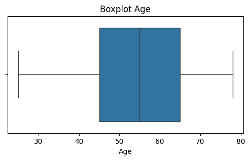
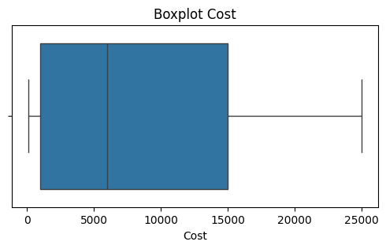
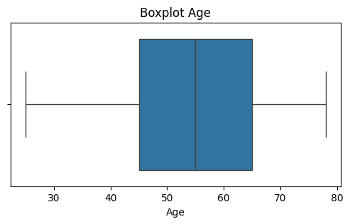
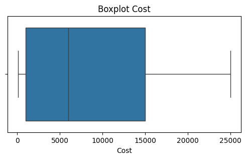

üìä Eksplorasi Data (EDA)#
1. Memuat Data#
Data diambil dari database PostgreSQL menggunakan SQLAlchemy dan pandas. Data ini kemudian dimasukkan ke dalam DataFrame agar lebih mudah dianalisis.
2. Informasi Dasar Data#
df.info()→ mengetahui jumlah baris, jumlah kolom, serta tipe data tiap variabel (numerik/kategorikal).df.describe()→ memberikan statistik deskriptif untuk data numerik (mean, min, max, quartile).
Tujuan: memberikan gambaran awal tentang bentuk data.
3. Cek Missing Values#
df.isnull().sum()→ menghitung jumlah nilai kosong per kolom.Persentase missing values dihitung agar tahu seberapa besar pengaruhnya.
Tujuan: mengetahui kualitas data dan strategi penanganan (hapus, isi dengan median/modus, dll).
4. Analisis Tipe Data#
Memisahkan kolom numerik (integer/float) dan kategorikal (string/objek).
Analisis numerik (outlier, korelasi) berbeda dengan analisis kategorikal (frekuensi, konsistensi).
Tujuan: mempermudah pemilihan metode analisis sesuai tipe data.
5. Analisis Outlier#
Visualisasi menggunakan boxplot (
sns.boxplot).Outlier terlihat sebagai titik yang jauh dari distribusi normal data.
Tujuan: mendeteksi nilai ekstrem yang dapat mempengaruhi analisis.
6. Distribusi Data#
Plot histogram (
df.hist) untuk kolom numerik.Menunjukkan pola distribusi (normal, skewed/miring).
Tujuan: memahami sebaran data dan memutuskan transformasi jika perlu.
7. Konsistensi Data Kategorikal#
Mengecek nilai unik (
df[col].unique()) dan distribusi kategori (value_counts()).Misalnya: kolom
jenis_kelaminharusnya hanya “Laki-laki” dan “Perempuan”, tetapi bisa saja ada typo seperti “Lk” atau “Pr”.
Tujuan: menemukan ketidakkonsistenan label kategori.
8. Korelasi Antar Variabel#
Matriks korelasi (
df.corr()) divisualisasikan dengan heatmap seaborn.Memberi gambaran variabel mana yang saling berhubungan kuat.
Tujuan: mencari pola hubungan antar variabel numerik.
9. Handling Missing Values#
Kolom numerik → diisi dengan median.
Kolom kategorikal → diisi dengan modus (nilai terbanyak).
Alternatif lain: hapus baris/kolom, atau gunakan metode imputasi lanjutan.
Tujuan: membuat data lebih lengkap sehingga siap untuk analisis lanjutan.
10. Simpan Data Bersih#
Setelah pembersihan (handling missing values, outlier, dll), data dapat disimpan ke
.csv.Data bersih digunakan untuk tahap pemodelan atau analisis lanjutan.
✨ Kesimpulan:
Eksplorasi Data (EDA) bertujuan untuk memahami data sebelum dipakai pada analisis lanjutan atau machine learning.
Tahapan ini membantu mendeteksi error input, ketidakkonsistenan, missing values, outlier, serta menemukan pola awal dalam data.
Memuat Data#
import pandas as pd
import numpy as np
import seaborn as sns
import matplotlib.pyplot as plt
from sqlalchemy import create_engine
# --- Koneksi PostgreSQL ---
db_user = 'postgres'
db_password = '123456789' # ganti dengan passwordmu
db_host = 'localhost'
db_port = '5432'
db_name = 'rumahsakit'
table_name = 'data_master'
# Buat koneksi
connection_url = f'postgresql://{db_user}:{db_password}@{db_host}:{db_port}/{db_name}'
engine = create_engine(connection_url)
# Ambil data
df = pd.read_sql(f"SELECT * FROM {table_name}", engine)
print("✅ Data berhasil dimuat")
df.head()
✅ Data berhasil dimuat
| Patient_ID | Age | Gender | Condition | Procedure | Cost | Length_of_Stay | Readmission | Outcome | Satisfaction | |
|---|---|---|---|---|---|---|---|---|---|---|
| 0 | 1 | 45 | Female | Heart Disease | Angioplasty | 15000 | 5 | No | Recovered | 4 |
| 1 | 2 | 60 | Male | Diabetes | Insulin Therapy | 2000 | 3 | Yes | Stable | 3 |
| 2 | 3 | 32 | Female | Fractured Arm | X-Ray and Splint | 500 | 1 | No | Recovered | 5 |
| 3 | 4 | 75 | Male | Stroke | CT Scan and Medication | 10000 | 7 | Yes | Stable | 2 |
| 4 | 5 | 50 | Female | Cancer | Surgery and Chemotherapy | 25000 | 10 | No | Recovered | 4 |
Cek Informasi Data#
# Info dataset: jumlah baris, kolom, tipe data
df.info()
# Statistik deskriptif untuk kolom numerik
df.describe().T
<class 'pandas.core.frame.DataFrame'>
RangeIndex: 984 entries, 0 to 983
Data columns (total 10 columns):
# Column Non-Null Count Dtype
--- ------ -------------- -----
0 Patient_ID 984 non-null int64
1 Age 984 non-null int64
2 Gender 984 non-null object
3 Condition 984 non-null object
4 Procedure 984 non-null object
5 Cost 984 non-null int64
6 Length_of_Stay 984 non-null int64
7 Readmission 984 non-null object
8 Outcome 984 non-null object
9 Satisfaction 984 non-null int64
dtypes: int64(5), object(5)
memory usage: 77.0+ KB
| count | mean | std | min | 25% | 50% | 75% | max | |
|---|---|---|---|---|---|---|---|---|
| Patient_ID | 984.0 | 500.329268 | 288.979531 | 1.0 | 250.75 | 500.5 | 750.25 | 1000.0 |
| Age | 984.0 | 53.754065 | 14.941135 | 25.0 | 45.00 | 55.0 | 65.00 | 78.0 |
| Cost | 984.0 | 8367.479675 | 7761.990976 | 100.0 | 1000.00 | 6000.0 | 15000.00 | 25000.0 |
| Length_of_Stay | 984.0 | 37.663618 | 19.595805 | 1.0 | 21.00 | 38.0 | 54.25 | 76.0 |
| Satisfaction | 984.0 | 3.598577 | 0.883002 | 2.0 | 3.00 | 4.0 | 4.00 | 5.0 |
laporan missing values#
# Jumlah missing values per kolom
df.isnull().sum()
# Persentase missing values
(df.isnull().sum() / len(df)) * 100
Patient_ID 0.0
Age 0.0
Gender 0.0
Condition 0.0
Procedure 0.0
Cost 0.0
Length_of_Stay 0.0
Readmission 0.0
Outcome 0.0
Satisfaction 0.0
dtype: float64
Analisis tipe data#
# Cek tipe data tiap kolom
print(df.dtypes)
# Pisahkan kolom numerik & kategorikal
num_cols = df.select_dtypes(include=np.number).columns.tolist()
cat_cols = df.select_dtypes(exclude=np.number).columns.tolist()
print("Kolom Numerik:", num_cols)
print("Kolom Kategorikal:", cat_cols)
Patient_ID int64
Age int64
Gender object
Condition object
Procedure object
Cost int64
Length_of_Stay int64
Readmission object
Outcome object
Satisfaction int64
dtype: object
Kolom Numerik: ['Patient_ID', 'Age', 'Cost', 'Length_of_Stay', 'Satisfaction']
Kolom Kategorikal: ['Gender', 'Condition', 'Procedure', 'Readmission', 'Outcome']
Analisi outlier numerik#
import seaborn as sns
import matplotlib.pyplot as plt
# Boxplot tiap kolom numerik
for col in num_cols:
plt.figure(figsize=(6,3))
sns.boxplot(x=df[col])
plt.title(f"Boxplot {col}")
plt.show()
 



Distribusi data numerik#
# Histogram distribusi numerik
df[num_cols].hist(bins=20, figsize=(12,8))
plt.suptitle("Distribusi Data Numerik", size=16)
plt.show()
Konsistensi data#
# Cek nilai unik tiap kolom kategorikal
for col in cat_cols:
print(f"\nKolom: {col}")
print(df[col].unique())
print(df[col].value_counts())
Kolom: Gender
['Female' 'Male']
Gender
Female 524
Male 460
Name: count, dtype: int64
Kolom: Condition
['Heart Disease' 'Diabetes' 'Fractured Arm' 'Stroke' 'Cancer'
'Hypertension' 'Appendicitis' 'Fractured Leg' 'Heart Attack'
'Allergic Reaction' 'Respiratory Infection' 'Prostate Cancer'
'Childbirth' 'Kidney Stones' 'Osteoarthritis']
Condition
Fractured Leg 67
Heart Attack 67
Fractured Arm 66
Hypertension 66
Appendicitis 66
Cancer 66
Stroke 66
Allergic Reaction 66
Diabetes 65
Heart Disease 65
Respiratory Infection 65
Prostate Cancer 65
Childbirth 65
Kidney Stones 65
Osteoarthritis 64
Name: count, dtype: int64
Kolom: Procedure
['Angioplasty' 'Insulin Therapy' 'X-Ray and Splint'
'CT Scan and Medication' 'Surgery and Chemotherapy'
'Medication and Counseling' 'Appendectomy' 'Cast and Physical Therapy'
'Cardiac Catheterization' 'Epinephrine Injection' 'Antibiotics and Rest'
'Radiation Therapy' 'Delivery and Postnatal Care' 'Lithotripsy'
'Physical Therapy and Pain Management']
Procedure
Cast and Physical Therapy 67
Cardiac Catheterization 67
X-Ray and Splint 66
Medication and Counseling 66
Appendectomy 66
Surgery and Chemotherapy 66
CT Scan and Medication 66
Epinephrine Injection 66
Insulin Therapy 65
Angioplasty 65
Antibiotics and Rest 65
Radiation Therapy 65
Delivery and Postnatal Care 65
Lithotripsy 65
Physical Therapy and Pain Management 64
Name: count, dtype: int64
Kolom: Readmission
['No' 'Yes']
Readmission
No 720
Yes 264
Name: count, dtype: int64
Kolom: Outcome
['Recovered' 'Stable']
Outcome
Recovered 591
Stable 393
Name: count, dtype: int64
Kolerasi antar table#
# Korelasi numerik
plt.figure(figsize=(10,6))
sns.heatmap(df[num_cols].corr(), annot=True, cmap="coolwarm", fmt=".2f")
plt.title("Matriks Korelasi")
plt.show()